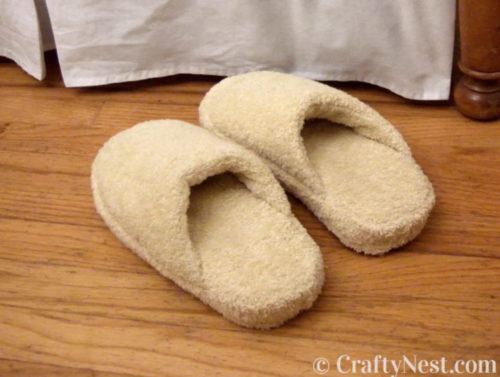

Sewing
Sewing is one of the oldest textile arts, and one of the most widely practiced needlecrafts in the world. Between hand sewing and machine sewing, sewing allows anyone to create their own clothing, accesories, homegoods, and more. Check out the resources below to get started with sewing or to find patterns to continue your sewing journey at any level!
Learn to Sew
Hand Sewing
Hand sewing is an easy way to start off learning how to sew as it involves fewer and cheaper materials than machine sewing, and builds skills with mending existing items and creating small projects. Hand sewing is also useful when you do not have access to a sewing machine, or are working with materials that require more precision, such as beadwork.
Learning Resources:
- Hand Stitching - Best Stitches and Methods from Treasurie
- Stitches and Techniques for Hand Sewing from The Spruce Crafts
Machine Sewing
Machine sewing is a great skill to learn if you want to make your own clothes, linens, or other fabric-based items. Machine sewing allows you to take on more complex projects in a shorter amount of time than hand sewing, and provides you with a range of settings and attachments for your machine that can make sewing a lot faster and easier. Machine sewing can also give your projects a more professional look.
Learning Resources:
- Sewing for Beginners: 25 Must-Learn Basic Sewing Skills from Sewing.com
- Sewing for Beginners: Everything You Need to Learn to Sew from Crazy little Projects
Patterns
Take a look at some patterns sorted by difficulty below:
Easy Tote Bag
This is an easy tote bag pattern & tutorial, with a free pdf pattern download.
The tutorial uses a sewing machine, but this could also be attempted with hand sewing alone.
Link: Easy Tote Bag Pattern
Large Drawstring Bag
This is a large drawstring bag pattern & tutorial.
The tutorial uses a sewing machine, but this could also be attempted with hand sewing alone.
This pattern is simple and could easily be adapted to different sizes.
Link: Large Drawstring Bag Pattern
Apron
This is an easy to follow apron tutorial that is the perfect for a beginner to practice with! This apron pattern
doesn't require many materials, and wouldn't take too long to follow, making it a great project to take on
a free weekend to try and boost your sewing skills.
Link: Apron Pattern
Pot Holders
This pattern requires thinking a bit more carefully about your materials and following a few extra steps, but the
steps themselves to create the potholders are quite simple and easy to follow. This pattern would be recommended
to help bridge your skills from a beginner to more intermediate level.
Link: Pot Holder Pattern
Insulated Lunch Box
This project does not include a printable/pdf pattern, but instead gives you the proper measurements for the various
pattern pieces you will need. This project requires a few specific materials such as waterproof fabric and insulating
lining fabric, but otherwise does not require too many materials.
Link: Insulated Lunch Box Pattern
House Robe
This project includes a printable/pdf pattern for a robe in three different sizes (S/M/L), allowing you to skip
adjusting the pattern to your specific measurements if you fall within their size ranges. This project is simple overall and
only requires a few materials, but has quite a few steps, making it a perfect intermediate level project to try out after working off of some beginner patterns!
Link: House Robe Pattern
Bath Towel Spa Slippers
While footwear may sound intimidating to attempt, this project provides easy step by step instructions on how to make
a simple pair of slippers out of a bathtowel, using your existing footwear as a guide! With a little patience, this intermediate
level pattern will upgrade your sewing skills and expand your confidence into more complex projects.
Link: Bath Towel Spa Slippers Pattern
Reversible Swimsuit
Swimwear may sound intimidating since it deals with more slippery, performance style fabrics, but this reversible swimsuit tutorial
is easy to follow for any intermediate level seamstress! Using existing clothes as a base for pattern measurements and requiring
few materials, this tutorial is the perfect way to try expanding your sewing repetoire.
Link: Reversible Swimsuit Pattern
Anti Pickpocket Bag
This project includes a printable pattern and step-by-step instructions with images for how to create an anti pickpocket bag.
General bag construction and adding in pockets makes this patttern a bit more advanced, but the tutorial is very
thorough in explaining all the steps.
Link: Anti Pickpocket Bag Pattern
Reversible Wrap Skirt
This project includes a pattern diagram and instructions on how to construct the reversible wrap skirt, but it does not
include any images to accompany the instructions, so this tutorial is for more advanced seamstresses who can follow
writtten instructions alone.
Link: Reversible Wrap Skirt Pattern
The Nova Pants
This pattern coems from Mood, which is a fabric store, but their website provides hundreds of free sewing patterns to
look through. This pattern is actually two in one, their Nova pant pattern having two different hem/cuff styles that
you can choose from. Pants are a bit more of an advanced project as getting the fit right can be tricky, but like all of Mood's
online patterns, this project includes step-by-step instructions with images.
Link: Nova Pants Pattern